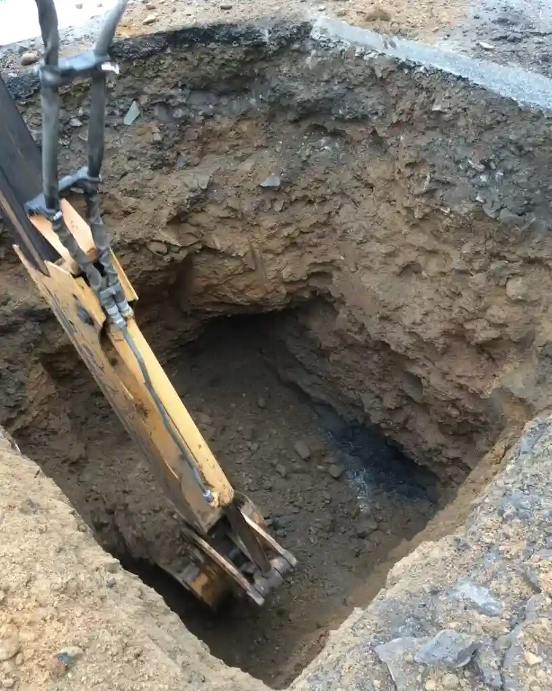

À Lyon, notre cabinet d'ingénierie géotechnique offre une gamme complète de services adaptés aux spécificités du territoire. De la caractérisation des sols à la conception de fondations, en passant par les études de stabilité et le contrôle des remblais, nous accompagnons chaque projet avec une approche intégrée. Nous réalisons des reconnaissances par sondages, des essais de perméabilité et des analyses de sols en laboratoire pour garantir des fondations sûres et durables. Nos équipes maîtrisent également les techniques de tomographie sismique pour une imagerie précise du sous-sol et l'analyse d'amplification sismique pour les zones à risque. Chaque mission s'appuie sur des référentiels normatifs rigoureux et une connaissance fine du contexte lyonnais.

Image technique de référence — Lyon
Méthodologie et portée
La région lyonnaise présente une géologie variée influencée par la vallée du Rhône et la Saône. On y rencontre principalement des alluvions fluviatiles récentes (sables, graviers et limons) dans les plaines inondables, avec une nappe phréatique souvent proche de la surface. Les formations plus anciennes incluent des molasses miocènes (grès tendres et marnes) et des argiles glaciaires du quaternaire. Sous les coteaux, des dépôts de moraine et des éboulis calcaires issus du Massif central complexifient les profils. La présence de lentilles d'argile plastique peut entraîner des tassements différentiels. Le risque sismique est modéré (zone 2 selon le zonage français), nécessitant une attention particulière aux amplifications locales. Les sols lyonnais montrent une sensibilité aux cycles de sécheresse-réhydratation, avec des phénomènes de retrait-gonflement des argiles. Une reconnaissance approfondie est donc cruciale pour les fondations et les ouvrages de soutènement.
Considérations locales
Notre équipe lyonnaise bénéficie d'une expérience régionale consolidée dans des projets variés : immeubles de grande hauteur, infrastructures de transport, lotissements et ouvrages hydrauliques. Nous utilisons un matériel calibré régulièrement (pénétromètres, pressiomètres, laboratoire d'essais) et nos ingénieurs maîtrisent les spécificités des sols locaux. Nous collaborons étroitement avec les bureaux de contrôle, les collectivités et les entreprises de travaux publics pour garantir des solutions conformes aux normes françaises. Nos compétences en conception de drains verticaux préfabriqués et en stabilisation de pentes nous permettent d'aborder des terrains complexes avec sérénité. Chaque mission fait l'objet d'un suivi rigoureux et d'une validation par des pairs expérimentés.
Nos études respectent strictement les normes françaises en vigueur. La norme NF P 94-261 (Eurocode 7) régit le calcul géotechnique, tandis que la NF P 94-160 définit les méthodes de reconnaissance. Pour les essais in situ, nous suivons la NF EN ISO 22476-1 pour les pénétromètres statiques et la NF EN ISO 22476-2 pour les pénétromètres dynamiques. Les essais de laboratoire sont réalisés selon la norme NF P 94-093 pour les essais de cisaillement et la NF P 94-050 pour les analyses granulométriques. En matière de sismicité, l'arrêté du 22 octobre 2010 relatif à la classification des ouvrages s'applique. Tous nos rapports sont rédigés en conformité avec ces référentiels.
Questions fréquentes
Quels sont les risques géotechniques principaux à Lyon ?
Les risques majeurs incluent les tassements différentiels dus aux alluvions compressibles, le retrait-gonflement des argiles, et les venues d'eau liées à la nappe phréatique haute. Les pentes des coteaux peuvent aussi présenter des instabilités. Une reconnaissance adaptée permet de les identifier et de dimensionner les fondations en conséquence.
Quelle est la profondeur typique de la nappe phréatique dans le centre de Lyon ?
Près de la Saône et du Rhône, elle peut affleurer en période de hautes eaux. Des rabattements temporaires sont fréquents en phase de construction.
Quelles normes françaises régissent les essais de sol pour les fondations ?
Les essais de sol sont encadrés par l'Eurocode 7 (NF P 94-261) et ses annexes nationales. Les pénétromètres statiques suivent la NF EN ISO 22476-1, les pressiomètres la NF P 94-110. Les essais en laboratoire respectent les normes NF P 94-050 à 94-093. Tous nos rapports incluent ces références.
Combien de temps dure une étude géotechnique pour un projet de construction à Lyon ?
La durée dépend de la taille du projet. Pour une maison individuelle, comptez 2 à 3 semaines (reconnaissance + rapport). Pour un immeuble de plusieurs étages, 4 à 8 semaines sont nécessaires, incluant sondages, essais en laboratoire et modélisations. Les délais peuvent s'allonger en cas de conditions complexes.